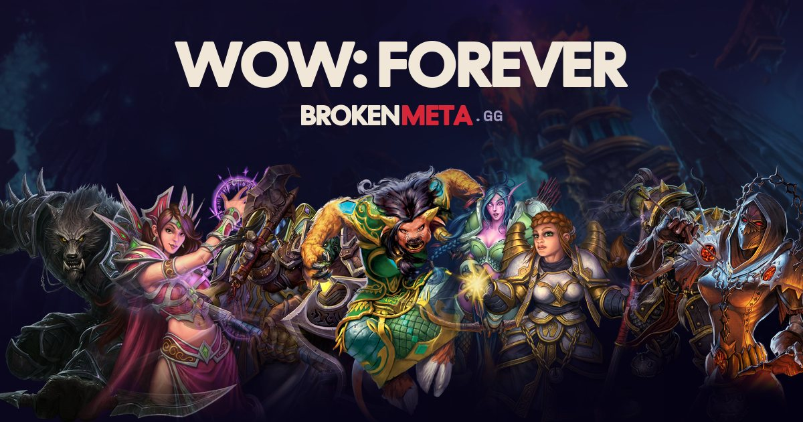

Druid and Paladin in WoW Forever: talent trees reworked before launch
A few days before the WoW Forever launch, Blizzard applied hotfixes on live servers: the Druid and Paladin talent trees change a lot, and Mage, Priest, Warlock and Warrior get lighter touches. These changes have since been confirmed by the official development notes of November 3, and they are in our level-60 simulator.
Druid in WoW Forever: Balance, Feral and Restoration buffs
- BALANCE Several Druid talents change position in the tree: see the before/after in our Druid talent calculator (link at the bottom of the page).
- UP
 Genesis (Balance): the periodic damage and healing bonus is now 2/4/6/8/10% per rank, up from 1/2/3/4/5%.
Genesis (Balance): the periodic damage and healing bonus is now 2/4/6/8/10% per rank, up from 1/2/3/4/5%. - UP
 Shifting Power (Feral): its cooldown drops to 8 s (16 s before). Primal Bite deals more damage (42/62/77 instead of 26/38/59) and moves.
Shifting Power (Feral): its cooldown drops to 8 s (16 s before). Primal Bite deals more damage (42/62/77 instead of 26/38/59) and moves. - UP
 Leader of the Pack now boosts all critical strikes, not only melee and ranged crits.
Leader of the Pack now boosts all critical strikes, not only melee and ranged crits. - BALANCE
 Berserk is removed from the Feral tree and a new talent, Lacerate, appears.
Berserk is removed from the Feral tree and a new talent, Lacerate, appears. - UP
 Naturalist (Restoration) doubles its damage effect (2/4/6/8/10%) and also shortens the Wild Growth cast.
Naturalist (Restoration) doubles its damage effect (2/4/6/8/10%) and also shortens the Wild Growth cast. - NERF Swiftmend now requires the target to have your Regrowth or Rejuvenation, not just any effect. Wild Growth has a 3 s cast time. New Restoration talent Bloom.
Paladin in WoW Forever: a heavily reworked talent tree
- BALANCE Holy: new talents Boundless Light and Oath of Light.
 Divine Precision drops to 2 ranks (+8% hit for Holy spells at max, was 18%) but cuts silence duration by 20%.
Divine Precision drops to 2 ranks (+8% hit for Holy spells at max, was 18%) but cuts silence duration by 20%. - UP
 Holy Power now raises the crit healing bonus by 10 to 50%, not the crit chance. Improved Seals now goes to rank 5 at 15% (rank 3 at 9% before).
Holy Power now raises the crit healing bonus by 10 to 50%, not the crit chance. Improved Seals now goes to rank 5 at 15% (rank 3 at 9% before). - BALANCE
 Spiritual Focus goes to 5 ranks (2 before) with 70% chance at max. Reverence has only 2 ranks for the same mana regeneration (30%).
Spiritual Focus goes to 5 ranks (2 before) with 70% chance at max. Reverence has only 2 ranks for the same mana regeneration (30%). - NERF
 Holy Shield (Protection) deals 32% less damage but costs 100 mana instead of 150. Iron Creed loses ranks (5 before): 30% threat at max rank instead of 15%, for 6% less damage taken instead of 10%.
Holy Shield (Protection) deals 32% less damage but costs 100 mana instead of 150. Iron Creed loses ranks (5 before): 30% threat at max rank instead of 15%, for 6% less damage taken instead of 10%. - UP Protection: Righteous Fury is learned at level 10 (was 16) and Improved Righteous Fury cuts damage taken by 3/6/9% (2/4/6% before). New talents Shieldsworn and Stoicism.
- BALANCE Retribution:
 Conviction drops to 3 ranks and affects all spells by 6% at max (5 ranks and 5% before). Vindication no longer raises attack power. A new spell, Turn Evil, appears.
Conviction drops to 3 ranks and affects all spells by 6% at max (5 ranks and 5% before). Vindication no longer raises attack power. A new spell, Turn Evil, appears.
Mage, Priest, Warlock, Warrior: the other tweaks in the patch
- UP Frost Mage: Ice Lance deals 300% bonus damage to frozen targets (200% before) but now has an 8 s cooldown. Ice Barrier rises to 15% Frost damage (3% before) and Winter's Chill to 20% for the next Cone of Cold (5% before).
- BALANCE Fire Mage: Critical Mass caps at 6% crit at rank 3 (10% at rank 5 before), while Incineration rises to 10% at rank 5 (6% at rank 3 before).
- NERF Priest: Shadow Word: Death deals 30% backlash damage to its caster, up from 10%. A Holy Binding talent is added on the Holy side.
- BALANCE Warlock: Improved Drains now boosts the mana drained by Drain Mana, not another spell. Warrior: Revenge scales with 25% attack power at all ranks.
What it means for your Druid or Paladin
- Balance and Restoration Druid: two damage talents double, the clearest gain of the patch for these specs.
- Feral Druid: Shifting Power's cooldown cut in half and the loss of Berserk change the rotation, to be tested in game.
- Protection Paladin: Holy Shield is weaker but cheaper, and Iron Creed gives more threat. The threat gain may offset the lost damage, nothing is measured.
- Holy Paladin: Holy Power now acts on crit strength, not frequency, and Spiritual Focus becomes a real 5-rank talent.
- Druids and Paladins will need to rebuild their talents: go through the calculator again before the November 4 launch.
These changes, first seen on Forever servers, were confirmed by the official development notes of November 3 (see our article on those notes) and are now in our level-60 simulator; this article gives no DPS number, they are in the ranking.
Frequently asked questions
Was the Druid buffed in WoW Forever before launch?
Yes, several talents go up: Genesis (Balance) and Naturalist (Restoration) double their effect, and Shifting Power's (Feral) cooldown drops from 16 to 8 seconds. These changes were confirmed by the official notes of November 3.
What happens to Holy Shield for Protection Paladin?
It deals 32% less damage but costs 100 mana instead of 150. Iron Creed also gives 30% more threat, for 6% less damage taken. These values are in our simulator since the notes of November 3.